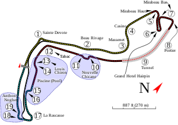
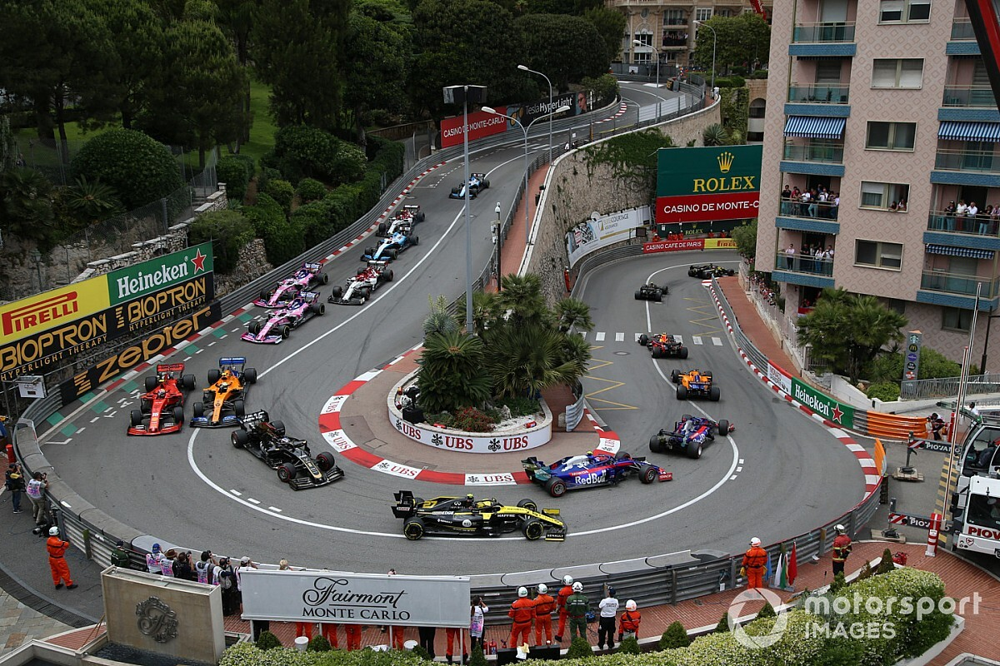
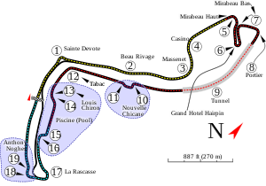
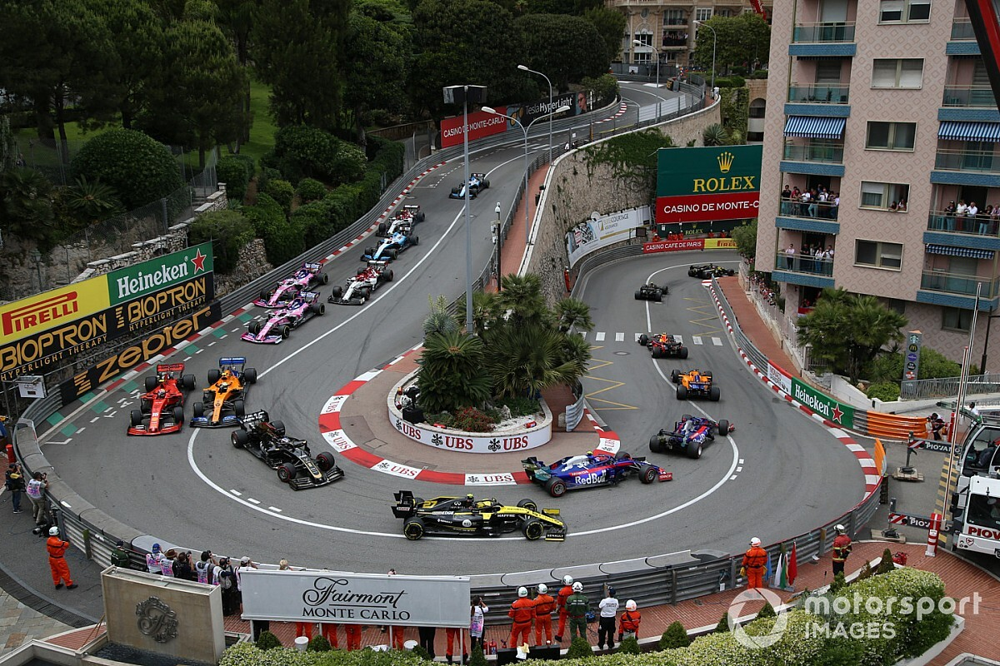

The Turkish Grand Prix is a relatively new addition to the Formula One calendar, having first been held in 2005. The race is held at the Istanbul Park circuit, which is located on the Asian side of Istanbul and is known for its challenging layout and high-speed corners. The Istanbul Park circuit is a favorite among drivers, featuring several high-speed corners and elevation changes that test the limits of both drivers and their cars. The circuit's most famous corner is Turn 8, a long and fast left-hander that puts incredible strain on drivers' necks and tires. The Turkish Grand Prix has had several memorable moments over the years, including the infamous clash between Red Bull teammates Sebastian Vettel and Mark Webber in 2010, and the dramatic battle between Lewis Hamilton and Felipe Massa in 2008. The race has also seen several different winners, including Felipe Massa, Kimi Raikkonen, and Jenson Button. However, the most successful driver at the Turkish Grand Prix is Sebastian Vettel, who won the race three times in a row between 2011 and 2013. Despite some challenges, such as low spectator attendance and financial issues, the Turkish Grand Prix remains an exciting addition to the Formula One calendar. Its challenging circuit, unpredictable weather conditions, and historic city location make it a unique and exciting event for both drivers and fans.
The Spa-Francorchamps circuit, located in the Ardennes region of Belgium, is one of the most iconic tracks in Formula One. The circuit is known for its fast straights, sweeping corners and challenging terrain, making it a favorite among drivers and fans alike. The first Belgian Grand Prix was held at Spa in 1925, and the circuit has been a regular fixture on the Formula One calendar since 1950. The track has undergone several modifications over the years, but has retained its reputation as one of the most challenging and exciting circuits in the world. The Spa-Francorchamps circuit is also famous for its unpredictable weather conditions, which can range from sunny and dry to heavy rain and fog. This adds an extra layer of challenge for drivers, who must navigate the treacherous corners and fast straights while adapting to changing conditions. The Eau Rouge corner, located at the bottom of a steep hill, is one of the most famous and challenging corners on the circuit. Drivers must navigate the corner at high speeds, while dealing with changes in elevation and the potential for unpredictable weather conditions. Over the years, many legendary drivers have won at Spa, including Michael Schumacher, Ayrton Senna, and Jim Clark. The circuit has also seen its share of controversy, including the tragic death of driver Ayrton Senna during the 1994 Belgian Grand Prix. Despite its challenges and controversies, the Spa-Francorchamps circuit remains a favorite among drivers and fans, and is considered one of the most iconic and exciting circuits in the world of motorsports.
 



The Monaco Grand Prix is one of the most prestigious and historic races in Formula One. Held annually on the streets of Monaco, the race is known for its glamour, excitement and challenging circuit. The first Monaco Grand Prix was held in 1929 and has been a regular fixture on the Formula One calendar since 1950. The race is famous for its narrow and winding circuit, which winds through the streets of Monte Carlo and features several tight turns and elevation changes. The circuit is widely considered to be one of the most challenging and demanding tracks in Formula One. In addition to its challenging circuit, the Monaco Grand Prix is also known for its glamorous atmosphere. The race is a highlight of the social calendar and attracts a wide range of celebrities, from movie stars to royalty. The circuit is lined with luxury yachts and the race is broadcast to a global audience of millions. Over the years, many legendary drivers have won the Monaco Grand Prix, including Ayrton Senna, Graham Hill, and Michael Schumacher. The race has also seen its fair share of controversy, with collisions and disputes over track position a common occurrence. Despite its challenges and controversies, the Monaco Grand Prix remains one of the most exciting and prestigious races in Formula One. It is a true test of skill and courage for drivers, and a spectacle for fans around the world.